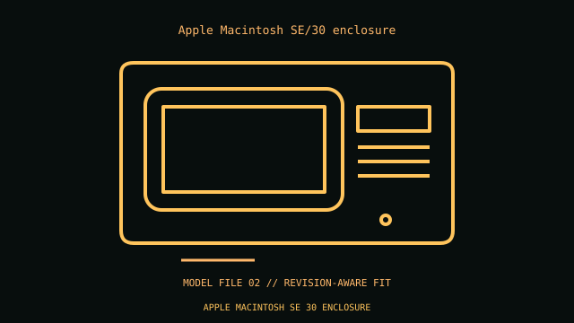

[ IDENTIFIED ENCLOSURE // VINTAGE DESKTOP AND PORTABLE SYSTEMS ]
Apple Macintosh SE/30 enclosure
About 13.6 × 9.7 × 10.9 in H×W×D for the compact monochrome all-in-one. Proprietary SE/30 logic/analog boards, CRT and one 68030 PDS slot; not an ATX case or generic SE shell.

VARIANT / ARCHIVAL CAVEAT: SE/30 differs from SE in logic, analog, ROM and PDS details. Preserve EMI shield and drive bracket; CRT service requires qualified handling.
Mechanical specifications and fit
| Catalog identity / revision | Apple Macintosh SE/30 enclosure |
|---|---|
| Dimensions / construction | About 13.6 × 9.7 × 10.9 in H×W×D for the compact monochrome all-in-one. |
| Drive bays / storage | One 1.44 MB front floppy and optional internal SCSI disk; no standard bays. |
| Board, system and compatibility | Proprietary SE/30 logic/analog boards, CRT and one 68030 PDS slot; not an ATX case or generic SE shell. |
| Revision / service note | SE/30 differs from SE in logic, analog, ROM and PDS details. Preserve EMI shield and drive bracket; CRT service requires qualified handling. |
Preservation and installation notes
Match the case and all internal assemblies by model suffix and board/drive revision; do not substitute visually similar generations.
- Photograph the complete model label, assembly revision and option identifiers before opening; keep matching covers, brackets, shields, trays and fasteners together.
- Before energizing any restored unit, check the period service procedure, insulation and PSU condition. A CRT system can retain hazardous voltage; use a qualified technician for CRT service.
Manufacturer manuals and model-specific sources
- Apple Macintosh SE/30 enclosure manufacturer specifications / product referenceModel-specific manufacturer specification, owner/service manual or technical reference; verify exact model and revision.
- Apple Macintosh SE/30 enclosure manual and service documentationModel-specific manufacturer specification, owner/service manual or technical reference; verify exact model and revision.
Where normalized dimensions or option-specific limits are not published, the record states that limitation rather than asserting a generic fit. Verify the cited manual revision against the specimen.